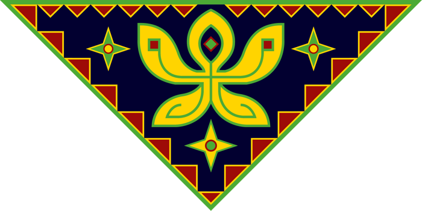
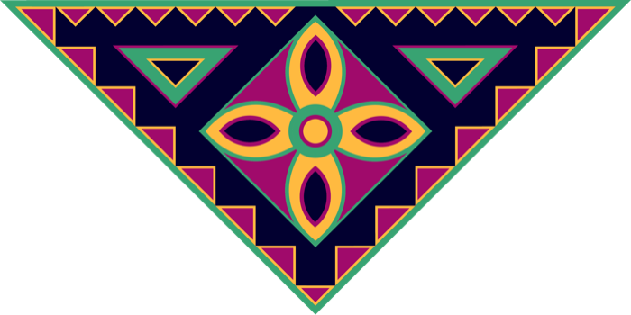

Thẻ vừa rút

Lấy nhịp chơi quen thuộc của cờ cá ngựa làm nền, rồi thêm các ô đặc biệt để mỗi vòng đua mở ra một câu chuyện và một tình huống mới.

Ô hoa đặc biệt: dừng đúng ô để rút một thẻ và thực hiện công dụng trên thẻ ngay lập tức.
Chạm vào từng nút để xem một lượt chơi diễn ra: ra quân, di chuyển, rút thẻ và đá quân.
Trên điện thoại, chạm vào bàn cờ để mở các nút thao tác ngay trên bàn.

Lục
LamChọn một tình huống để xem cách chơi diễn ra.
Dừng ở ô hoa, rút một lá và thực hiện ngay công dụng được ghi trên thẻ.
Chơi từ 2–4 người. Mỗi người chọn một màu và đặt 4 quân vào chuồng. Xáo bộ thẻ rồi úp cạnh bàn cờ.
Tung được 6 để đưa một quân ra ô bắt đầu. Sau khi ra quân, người chơi được tung thêm một lần.
Mỗi lượt chọn một quân và đi đúng số ô trên xúc xắc. Dừng đúng ô có quân đối thủ thì đưa quân đó về chuồng.
Khi dừng đúng ô ✦, rút lá trên cùng, đọc thành tiếng và thực hiện action. Thẻ đã dùng được đặt xuống đáy chồng.
Quân đi hết một vòng sẽ vào đường về đích. Cần tung đúng số bước còn thiếu; nếu thừa, hãy di chuyển quân khác.
Người đầu tiên đưa đủ 4 quân về đích thắng. Nếu muốn ván ngắn hơn, chỉ cần đưa 2 quân về đích.